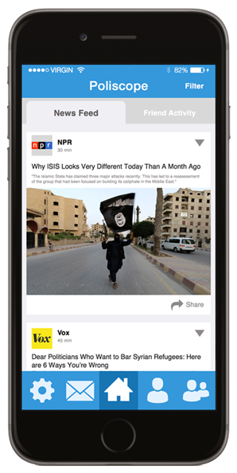

We're Sorry
This site is not optimized for your screen resolution.Overview
For those tired of sifting through news they don't care about, Poliscope brings all your political news straight to your fingertips. Now you can keep track of news topics that interest you and find out what your friends like too.
How It Works
Read articles selected for you.
Customize what shows up on your feed.
Add friends and follow their activity.

See what your friends are interested in.
Our Video Prototype
Meet the Team
Janet Gao

Kiyana Salkeld

Kim Le
Ian Turner